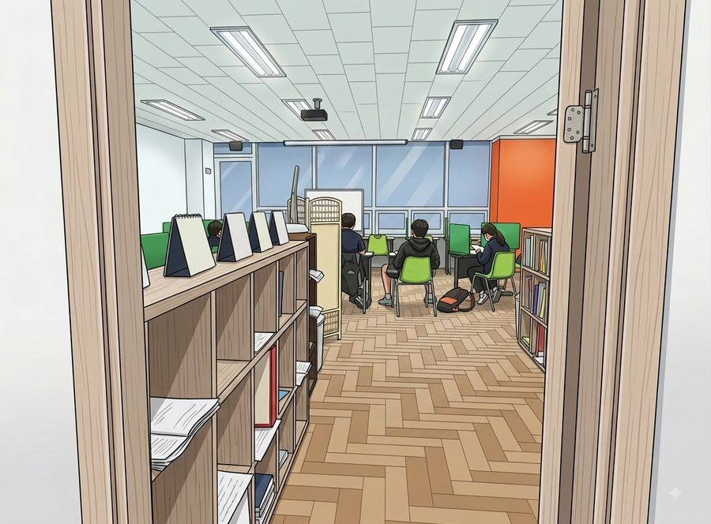

직접 푸는 수업입니다.
지점 안내
| 주소 | 대구 달서구 월성동 1848번지 그루타워 702호 |
|---|---|
| 주변 | 조암초등학교 인근 |
| 수업 과목 | 국어초4~고2영어초4~고2수학초4~고2과학초4~고2 |
| 수업 시간 | 평일 오후 3시 이후 · 토요일 상담 예약제 · 셔틀버스 없음 · 수업비는 아래 수강료 안내 참고 |
오시는 길
수업 방식
와와학습학원에서는 선생님이 칠판 앞에서 진도를 나가지 않습니다. 학생은 진단으로 정한 자기 교재를 펴고 직접 풀고, 국어·영어·수학·과학 과목 선생님은 옆에서 확인하다가 막히는 부분을 개별로 설명합니다.
그래서 개강일이 없습니다. 이번 주에 등록하면 이번 주에 시작하고, 교재와 주당 횟수는 학생마다 다르게 잡습니다. 시험 3~4주 전에는 다니는 학교 범위로 수업이 바뀝니다.
- 공부 계획을 세우고, 오답을 정리하고, 그날 분량을 마치는 것까지 선생님이 매 수업 확인합니다.
- 기초가 부족한 학생은 이전 학년 단원부터, 여유 있는 학생은 상담 후 심화·연계학습까지 나갑니다.
- 개설 과목과 대상 학년은 지점마다 다르니 상담에서 확인해 주세요.
초등부
초등 과정에서는 진도보다 앉아서 공부하는 습관과 기본기가 우선입니다. 학교 교과 진도를 따라가면서, 매 수업 정해진 분량을 스스로 끝내는 연습을 같이 합니다. 중등 연계 단원은 미리 짚어 둡니다.
중등부
중학교 성적은 지필고사와 수행평가를 합쳐서 나옵니다. 평소에는 학교 진도에 맞춘 자기 진도 수업을 하고, 시험 4주 전부터 학교 범위로 바꿔 준비합니다. 수행평가 제출물은 마감 전에 학원에서 점검하고, 공부 계획을 스스로 세우는 습관도 이 시기에 잡습니다.
고등부
고등 내신은 학교 기출 유형 분석이 기본입니다. 지필 대비와 함께 수행평가를 채점 기준표에 맞춰 준비하고, 교과 세특에 넣을 만한 탐구 주제도 수업에서 다룬 내용과 연결해 챙깁니다.
과목별 수업 안내
과목을 선택하면 월성동 기준의 수업 방식과 내신 대비 흐름을 자세히 볼 수 있습니다.
관리 학교
신월성점에 다니는 학생들의 소속 학교입니다. 학교별 시험 대비 안내는 학교 이름을 눌러 확인하세요. 목록에 없는 인근 학교 학생도 수업이 가능하니 상담에서 확인해 주세요.
영상으로 보는 와와

자주 묻는 질문
강의식 수업인가요?
아닙니다. 칠판 앞에서 설명하고 받아 적는 수업은 하지 않습니다. 학생마다 진단으로 정한 자기 진도를 직접 풀고, 선생님이 옆에서 보다가 막히는 곳을 설명해 줍니다. 공부 방법과 습관도 같이 잡아 주기 때문에 혼자 두는 자습과는 다릅니다.
상담은 어떻게 신청하나요?
화면의 전화 상담 버튼 또는 상담 신청 페이지로 접수하시면 됩니다. 상담은 예약제로 진행되어, 접수 후 지점에서 시간을 잡아 연락드립니다.
수업료는 어떻게 되나요?
중간에 등록해도 진도를 따라갈 수 있나요?
개별 진도로 수업하기 때문에 학기 중 등록이 불리하지 않습니다. 첫 주에 진단을 거쳐 학생의 현재 위치에서 시작합니다.